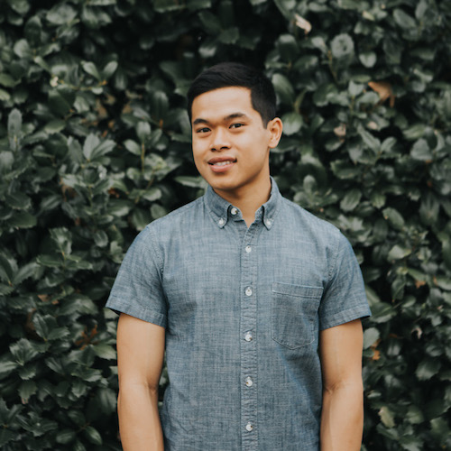

About Me
Let me tell you about myself...

Bio
I was borned in Boston, MA and raised in Dallas, TX. My wife and I are expecting our first child in early December (of 2018). Excited is an understatement... I can't wait to meet my baby boy. Aside from spending time with wife and family, I enjoy playing basketball and basically any competitive sport. Traveling is one of my favorite things to do. I never got to travel much as a kid, so it's something I really enjoy. I also love coding and building things with technology.
DoctorLogic
Front-end Developer
2015 - Present
- Building cutting-edge, mobile-first, responsive websites
- Using modern web technologies such as HTML, CSS, and Javascript to create beautiful designs
- Working with a team of developers & designers
- Testing websites over a wide range of devices & breakpoints
- Maintaining websites and fixing bugs in production
DoctorLogic
Implementation Specialist
2014 - 2015
- Obtaining information from clients to create a seamless build process
- Outlining the major milestones necessary in order to launch websites by contract deadlines
ClickMotive
Implementation Intern
2010 - 2012
- Assisting in various implementation tasks
- Analyzing data from reporting tools to build meaningful reports